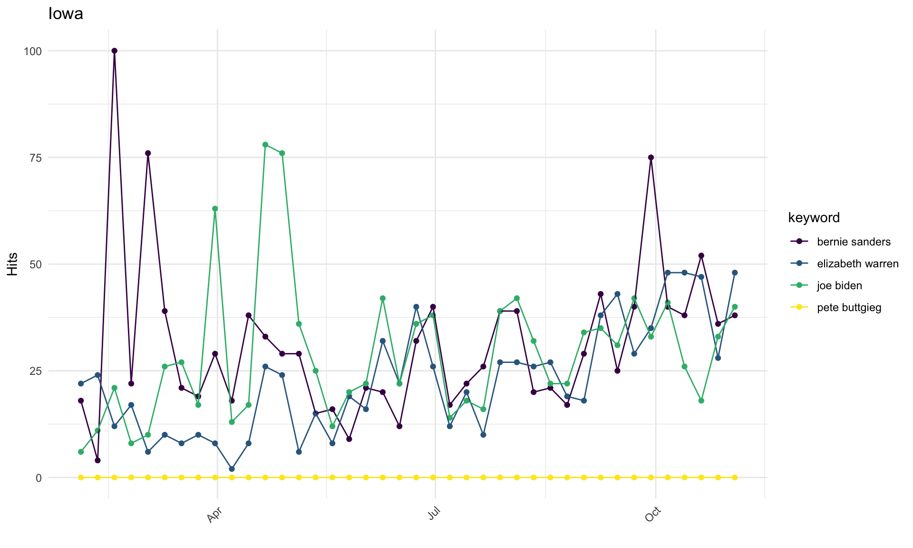
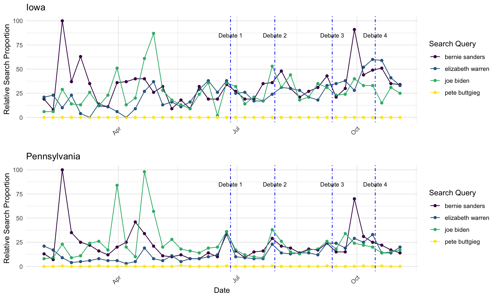

Battleground
Battleground States in American Politics

While voters from various states exhibit trends of selecting a candidate from a particular party in the presidential elections, there are those select few states where no single candidate may have garnered overwhelming support, resulting in a close race up until election night. The term “Swing State” first emerged in politics around the 1960s but was replaced by “Battleground” in the early 2000s, reflecting the often tumultuous campaigning that will occur between leading candidates. Battleground states may change with election cycles as well, due to demographic shifts in the voter pool or recent changes in other elections like gubernatorial and state legislative, but typically they are characterized by a margin of victory in a previous presidential election of less than 5%. In 2016, eleven states carried this distinction: CO, FL, IA, MI, MN, NV, NH, NC, OH, PA, and VA. In the upcoming 2020 election, key states such as PA, MI, and WI from the rust belt are considered to be likely Battlegrounds, as well as southern states like FL. In 2016, Trump won these three rust belt states with an approxmiate total of 107,000 votes, which was only less than 1% of all votes in the election, but helped him clinch overall victory.
Pennsylvania and Iowa
Pennsylvania has experienced recent shifts in local level results, as three regularly strong Republican counties all flipped blue. In Chester County, it was the first time Democrats won several key offices since 1799, and similarly in Bucks County, it was the first time Democrats won any countywide office except for county commissioner in 30 years. Pennsylvania’s 2020 primary will be held Tuesday, April 28th.
Iowa is often considered to be a state of note, not only for its frequent Battleground status but also because it hosts the first caucus or primary during a presidential election year, which will happen Monday, February 3rd. For the last 20 years, an Iowa winner (top 4 for their party) has gone on to win the presidency. Recent poll results in October have shown a surprising jump by South Bend major Pete Buttigieg in Iowa, who has propelled himself into the top 3 leading candidates with 13%, following closely behind frontrunners Senator Elizabeth Warren at 17% and former Vice President Joe Biden at 18%.
Polling in Important 2020 Election States
Top democratic candidates from Iowa and Pennsylvania with the highest average polling results:
Candidate | Average Polling Percentage (IA) | Average Polling Percentage (PA)
Biden | 23.7 | 32.4
Sanders | 16 | 13.5
Warren | 15.8 | 11.8
Buttigieg | 11.6 | 6.7
A Range of Results- Poll Projections Vary
Iowa
Median polling results for leading candidates show Biden still ahead of the pack with 25% but also a large range of 20% between lowest and highest predictions. Warren follows in second in the polls and with a similarly wide range of 19%. Just a 2% difference between Warren and Sanders may signify a tight race. Buttigieg continues to lag behind these three but remains in double digits with 13%, all the while exhibiting the lowest range in polls at only 9.6%.
Pennsylvania
Google Trends By State
Iowa

While Sanders could appreciate an increase in Google searches earlier in spring of this year, his relative search load in Iowa has fallen and remained just over 25%. This is in stark contrast to Warren and Buttigieg whose names shot up in searches this fall, with Warren closing in on 100% and Buttigieg up to almost 75%, potentially reflecting his result in the October Suffolk University/USA Today poll where he climbed into double digits. Biden may be showing the lowest relative proportion of searches at under 25%, but still maintains his support and an overall lead in polling within the state. In many cases it seems that candidates may have experienced positive movement in searches following debate periods in late June and July as well as early September and October, which is when they are most visible to voting audiences. Throughout the debates, Iowa has been mentioned more often than the other states whose caucus’ or primaries will take place in February, 2020; however, only Buttigieg has directly mentioned Iowa while on stage, which may play a role in his within-state popularity.
Pennsylvania

Pennsylvania shows a different story in Google searches, as no single candidate has crested the 50% margin. Warren came close around August but has experienced some fluctuation, leaving her at about 33%. Sanders saw a significant jump in searches around July, giving him a 30% boost, but has since lowered. Biden is again low in search results, and Buttigieg does not seem to exhibit the same strength in popularity as he did in Iowa, coming in about 50% lower in overall searches in PA following the most recent polls.